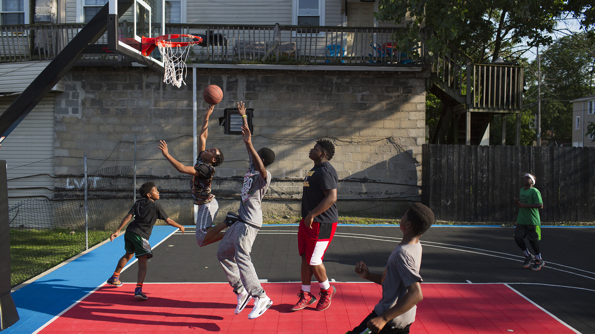
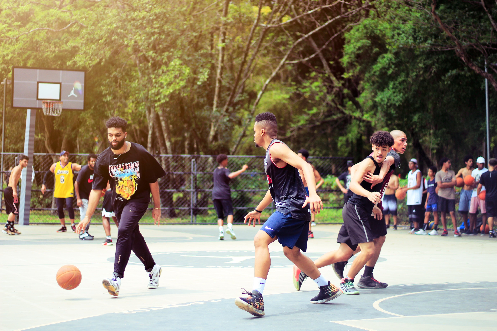

Para a criançada e adolescentes
O melhor momento de aprendizado é quando somos crianças, enquanto criamos amizades durante a fase da adolescência. Traga seu(ua) filho(a) para desenvolver não só habilidades no basquete, mas também para construir conduta e boas noções sociais.
- Segundas e Quartas
- 5 a 10 anos - 18h às 19h30
- 11 a 13 anos - 18h às 19h30
- 14 e 15 anos - 19h às 20h30
- 16 e 17 anos - 19h às 20h30

Para jovens adultos
Querer aprender nunca é tarde e se aprimorar sempre é importante. Então temos um momento reservado para os novos aspirantes a vida de hooper, aos que tem uma base mas pretendem melhorá-la e aos mais experientes que não querem ficar estagnados.
- Terças e Quintas (18 a 27 anos)
- Iniciante - 18h às 19h30
- Intermediário - 18h às 19h30
- Avançado - 19h às 20h30

Eventos
Outra abordagem que utilizamos para que você se conectar ao máximo com a cultura do basquete são os eventos promovidos todo mês.
- Fique ligado nas nossas redes sociais
- Torneios 3x3
- Torneios 5x5
- Eventos de exibição
- Workshops
- Encontros com autoridades no ramo